Apartment-0
4 agents, 7,792 frames, 101.6 m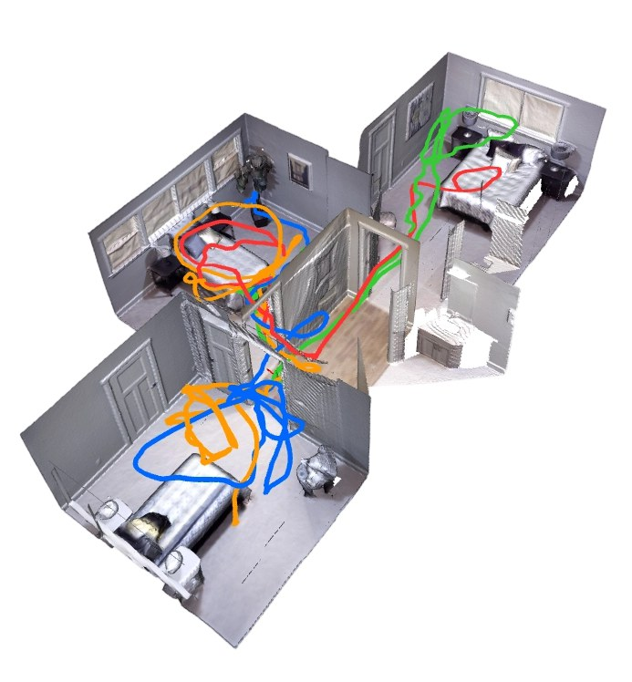
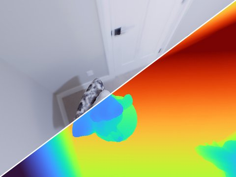
RGBDepthSemanticRGB
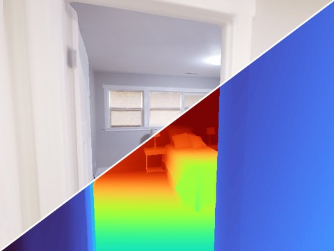
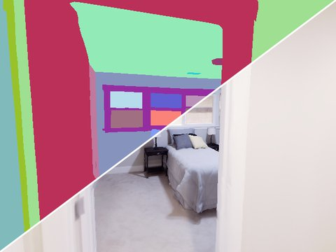
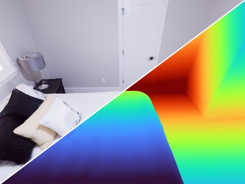
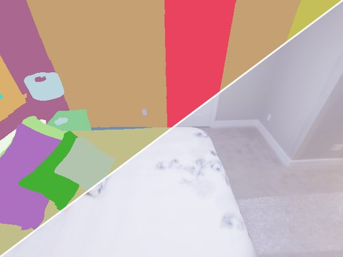
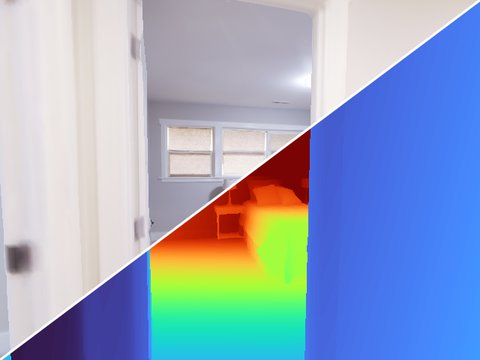
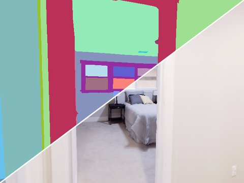
Released with MAGS-SLAM, IEEE T-ASE 2026
Existing multi-agent SLAM benchmarks force a trade-off between photometric realism, agent count, and ground-truth completeness. Real-world sets provide authentic sensor noise but no dense mesh ground truth and no semantic supervision, while synthetic sets built on Replica cap the team at two agents.
ReplicaMultiAgent Plus re-renders Replica scenes through Habitat-Sim with up to four human-teleoperated agents per scene. Each trajectory is driven by an operator at 30 Hz with a game controller, mixing long forward sweeps, look-arounds, brief stops, and revisits, while following a per-scene overlap budget. The benchmark simultaneously provides:
It supports the evaluation of monocular, RGB-D, and semantic multi-agent SLAM for collaborative dense reconstruction.
Left: ground-truth mesh with the human-teleoperated agent trajectories overlaid, one colour per agent. Right: sample observations of each agent. Each tile is split diagonally: the upper tile shows RGB and depth, the lower tile shows semantics and RGB.


RGBDepth





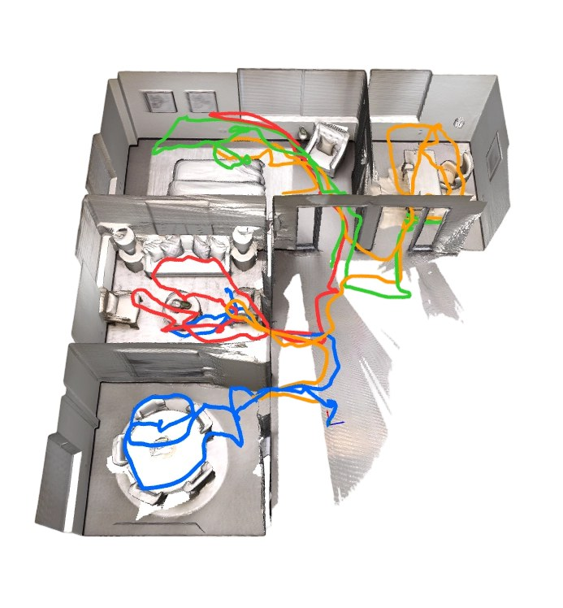
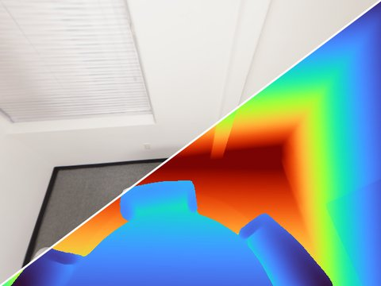
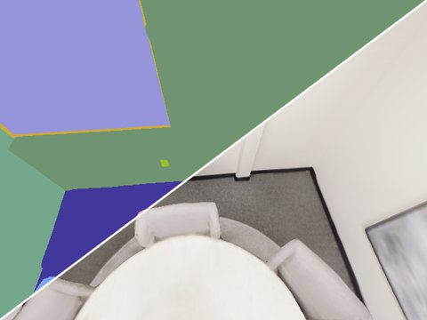
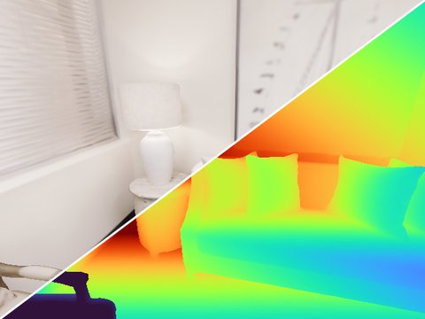
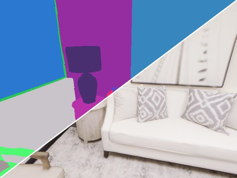
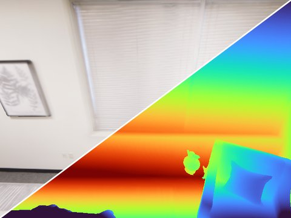
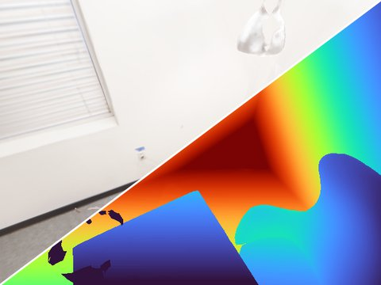
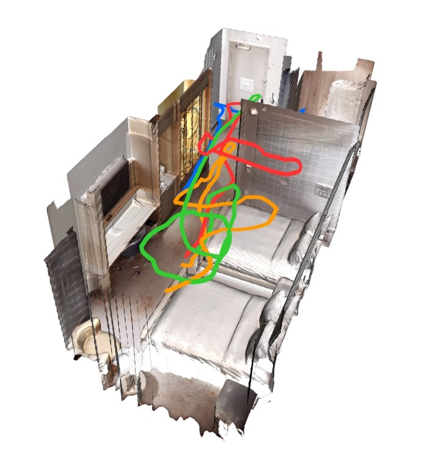
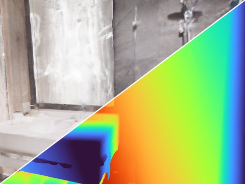
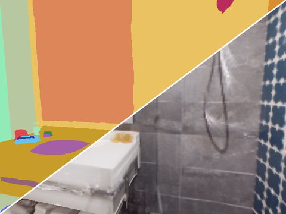
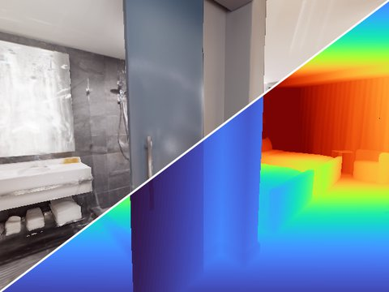
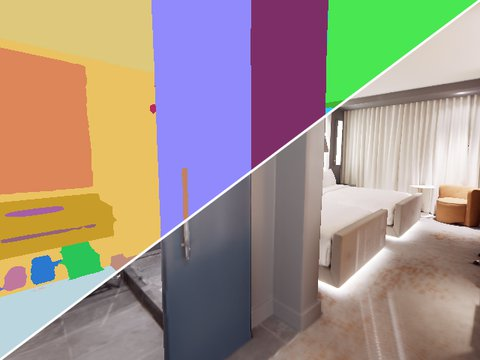
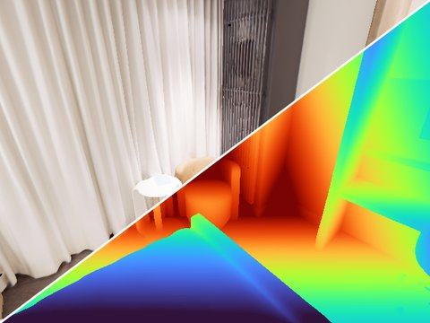
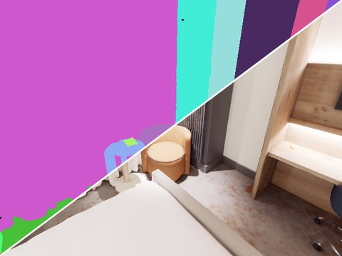
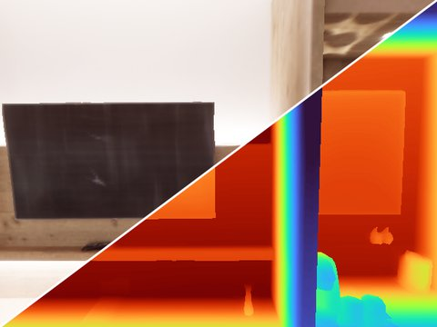
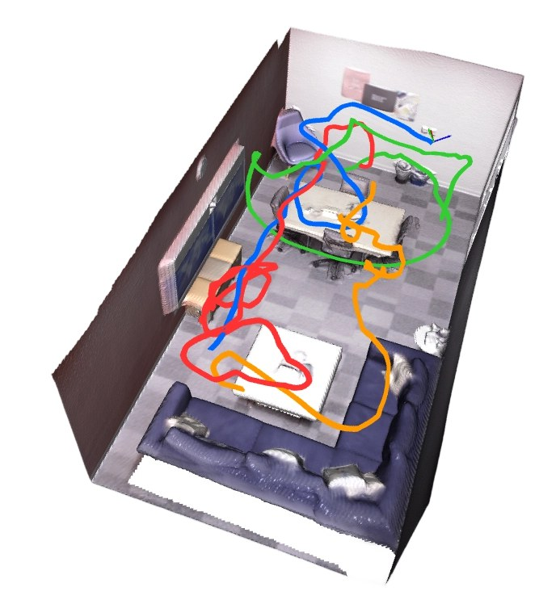
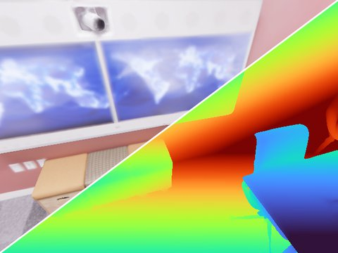
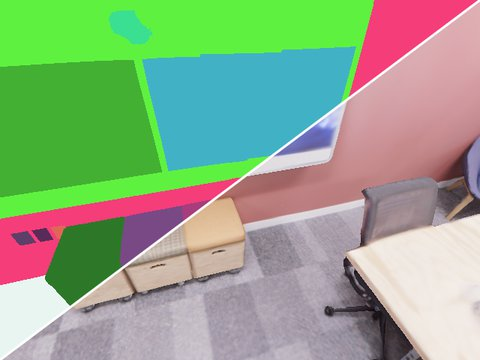
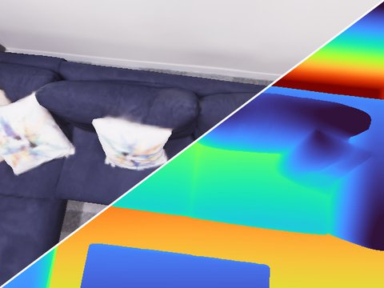
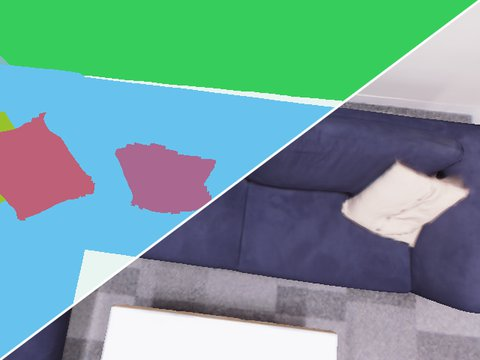
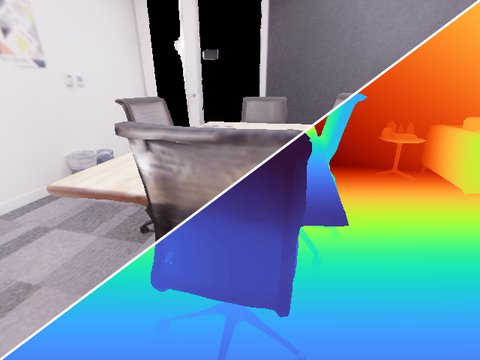
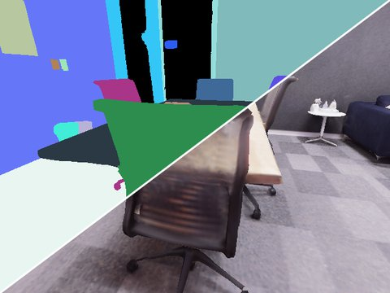
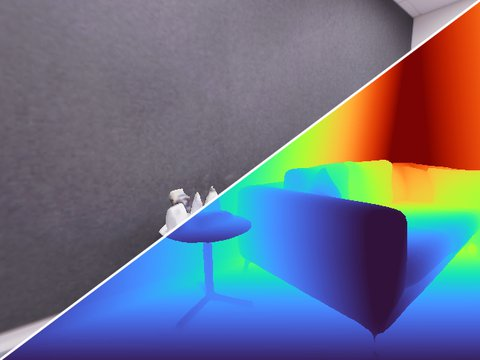
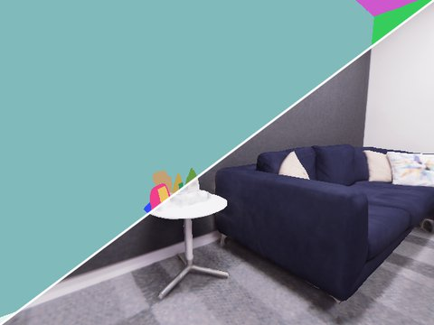
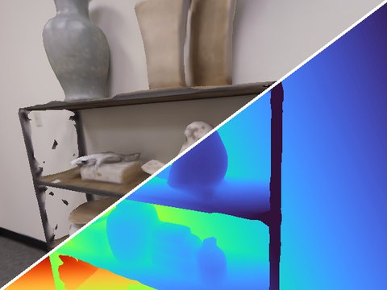
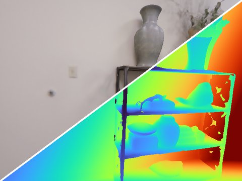
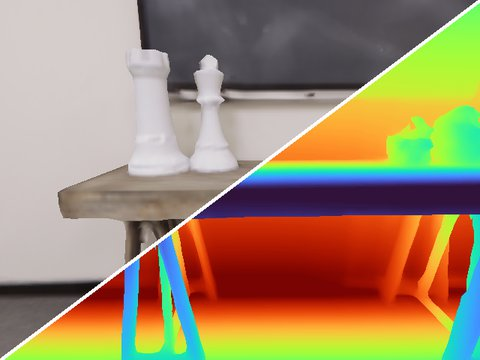
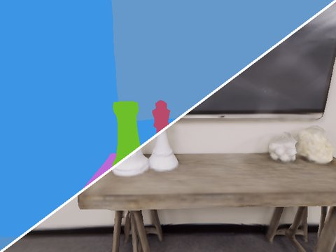
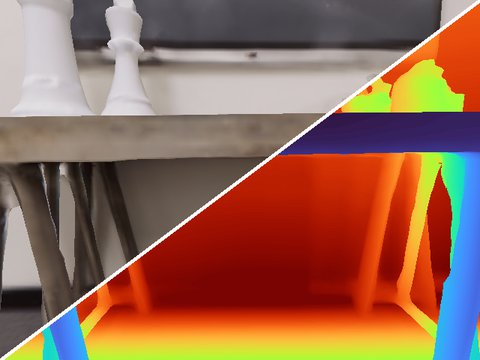
Each scene is released as one zip archive. Download individual scenes below, or the whole Google Drive folder.
| Scene | Agents | Frames per agent | Total frames | Path length | Co-visible voxels | Mean pairwise overlap | GT mesh | Size | Download |
|---|---|---|---|---|---|---|---|---|---|
| Four-agent benchmark scenes | |||||||||
| Apartment-0 | 4 | 1,696–2,238 | 7,792 | 101.6 m | 80.5% | 41.3% | ✓ | 2.6 GB | Apart-0.zip |
| Apartment-2 | 4 | 2,062–3,049 | 9,516 | 119.9 m | 85.9% | 34.9% | ✓ | 3.1 GB | Apart-2.zip |
| Hotel-0 | 4 | 782–1,173 | 4,122 | 49.8 m | 72.8% | 37.7% | ✓ | 1.4 GB | Hotel-0.zip |
| Office-2 | 4 | 881–1,303 | 4,325 | 54.1 m | 72.2% | 59.8% | ✓ | 1.4 GB | Office-2.zip |
| Additional two-agent sequences | |||||||||
| Room-0 | 2 | 801–1,037 | 1,838 | 20.8 m | – | – | – | 507 MB | Room-0-Part.zip |
| Apartment-1 | 2 | 275–340 | 615 | 7.4 m | – | – | – | 141 MB | Aprat-1-Part.zip |
To download everything from the command line:
pip install gdown
gdown --folder https://drive.google.com/drive/folders/1FSf4tZvr7AZ8HfxcSDReWY2QMdeMrWvvEvery archive contains one folder per agent (part1 … partN = agent 1 … agent N). All agents of a scene are recorded in the same world frame.
Apart-0/
├── apart_0_part1/ # agent 1
│ ├── rgb/ # 000000.png, 000001.png, ...
│ ├── depth/
│ ├── semantic/
│ ├── groundtruth.txt
│ └── intrinsics.txt
├── apart_0_part2/ # agent 2
├── apart_0_part3/ # agent 3
├── apart_0_part4/ # agent 4
└── tsdf_mesh_w0.0.ply # ground-truth mesh (four-agent scenes)| File | Content |
|---|---|
rgb/NNNNNN.png | 8-bit RGB image, 640 × 480. |
depth/NNNNNN.png | 16-bit PNG, metric depth in millimetres (divide by 1000 for metres). |
semantic/NNNNNN.png | 16-bit PNG, per-pixel Replica semantic class ID. |
groundtruth.txt | Camera poses in TUM format, one line per frame: timestamp tx ty tz qx qy qz qw (camera-to-world, 30 Hz). Line i corresponds to image i. Poses follow Habitat's OpenGL camera convention (x right, y up, z backward). |
intrinsics.txt | fx fy cx cy width height = 320 320 320 240 640 480 (pinhole, 90° horizontal FoV, identical for all agents). |
tsdf_mesh_w0.0.ply | Dense ground-truth mesh of the scene (four-agent scenes). |
Loading one frame in Python:
import numpy as np
from PIL import Image
from scipy.spatial.transform import Rotation
seq = "Apart-0/apart_0_part1" # Apartment-0, agent 1
fx, fy, cx, cy, W, H = np.loadtxt(f"{seq}/intrinsics.txt")
poses = np.loadtxt(f"{seq}/groundtruth.txt") # t tx ty tz qx qy qz qw
i = 0
rgb = np.array(Image.open(f"{seq}/rgb/{i:06d}.png"))
depth = np.array(Image.open(f"{seq}/depth/{i:06d}.png")) / 1000.0 # metres
semantic = np.array(Image.open(f"{seq}/semantic/{i:06d}.png")) # class IDs
c2w = np.eye(4)
c2w[:3, :3] = Rotation.from_quat(poses[i, 4:8]).as_matrix()
c2w[:3, 3] = poses[i, 1:4]
c2w_opencv = c2w @ np.diag([1, -1, -1, 1]) # OpenGL -> OpenCV camera axesIf you find this dataset useful, please consider citing:
@article{cao2026mags,
title = {MAGS-SLAM: Monocular Multi-Agent Gaussian Splatting SLAM for
Geometrically and Photometrically Consistent Reconstruction},
author = {Cao, Zhihao and Shao, Qi and Zhai, Shuhao and Zhang, Jing and
Nguyen, Anh and Wang, Hesheng and Huang, Baoru},
journal = {IEEE Transactions on Automation Science and Engineering},
year = {2026},
doi = {10.1109/TASE.2026.3746179}
}ReplicaMultiAgent Plus is rendered from the Replica dataset with Habitat-Sim. Use of the data is subject to the original Replica terms, so please also cite Replica.